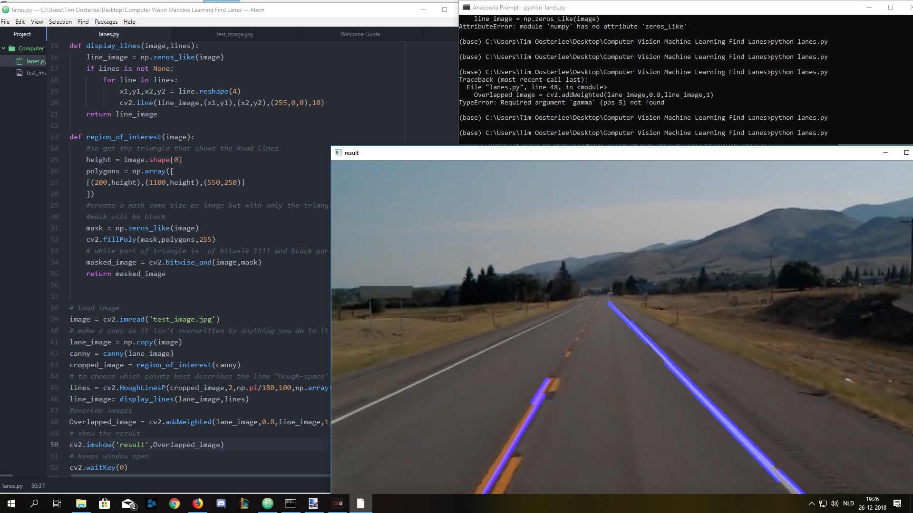

Inspiratie voor dit leerdoel
Ik wilde iets gaan doen met Machine Learning en keek wat rond op internet. Ik zag wat Machine Learning toegepast samen met Computer Vision en wilde dit onderwerp verder bekijken. Daarom heb ik een project gemaakt om de lijnen van een snelweg te laten bijhouden door de computer op een afbeelding en een video.
×

Dit is hoe het in stappen gemaakt is
Klik op de plaatjes om ze te vergroten. En klik op het kruisje of naast de afbeelding om te sluiten
Stap 1 Voorbereiding
Voor het voorbereiden heb ik een afbeelding van internet gepakt om mee te werken. Ik gebruik:
- 'Atom' als tekst-editor
- Python 3.7
- Libraries: Numpy, cv2, matplotlib.pyplot
Stap 2 Omzetten naar een grijze afbeelding
Elke afbeelding bestaat uit een array van pixels met waarde van 0 tot 255 een grijze afbeelding bestaat uit alleen maar pixels met een waarde van 255 zoals hiernaast te zien is als voorbeeld. Over dit plaatje wordt een Gaussian Blur toe gepast om de 'noise' te verminderen zodat er kleine veranderingen zijn in intensiteit van licht.
Stap 3 Contrast lijnen
Je kan dit plaatje ook zien als een matrix(2D) met x en y. Als je het plaatje ziet als een functie van x en y vb. f(x,y) dan kan je hier de afgeleide van nemen om het gradiënt(intensiteit van de kleur) te bepalen en zo de randen ofwel 'edges' van een afbeelding te bepalen aan de hand van de grootste variatie in gradiënt zoals te zien is in figuur hiernaast.
Stap 4 Plotten in een grafiek
Hier kijk ik in de afbeelding de precieze afmeting van het gebied wat ik wil zien.
Stap 5 Voorbereiding uitsnede
Door middel van binaire getallen wiskunde te gebruiken waarbij 255 wordt gerepresenteerd door 11111111 en 0 wordt gerepresenteerd door 00000000. Als je hiervan de Bitwise-AND neemt van figuur uit stap 3 en figuur uit stap 5 dan krijg je een masker waarbij alleen het stukje van afbeelding in stap 6 overblijft.
Bitwise-And ->( 11110000 (afbeelding uit stap 5) & 11111111 (afbeelding uit stap 3) = 11110000 )
Stap 6 uitsnede van afbeelding
Door de operatie die in de vorige stap is gedaan is het het resultaat voor het interesse gebied wat ik wilde krijgen. Waar nu verder mee gewerkt kan worden.
Stap 7 Interesse gebied
Om rechte lijnen uit de afbeelding te halen is er een techniek die heet "Hough transform". Het zoekt de beste lijn waar de meeste punten doorheen gaan. In het plaatje zijn dat de lijnen van de weg.
Stap 8 Interesse gebied verwerkt in afbeelding

Dit is het resultaat van het uitvoeren van de "Hough transform"
Stap 9 Afwerken van de lijn
Dit is een kleine optimalisatie om de lijn rechter te maken.
Als laatste heb ik gekeken naar hoe ver ik kon komen met dit te verwerken in een video. wat een stuk lastiger was omdat ik in essentie van een afbeelding heb bepaald waar de lijnen zich bevinden dus de video gaat niet heel ver. Hieronder is het resultaat te zien.
Reflectie
Ik heb mijn leerdoel behaald. Door dit project ben ik meer te weten gekomen van hoeveel wiskunde er zit om dit te laten werken. Zonder youtube en internet zou dit een stuk lastiger zijn geweest. Dit was alleen maar computer vision deel wat handig is voor Machine Learning. En ik zou graag meer te weten willen komen over andere Machine Learning gebieden